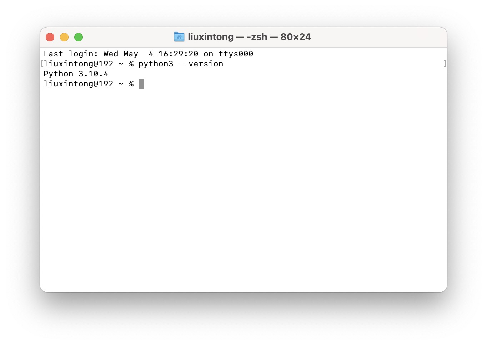
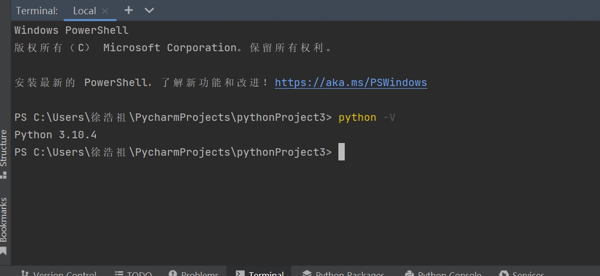
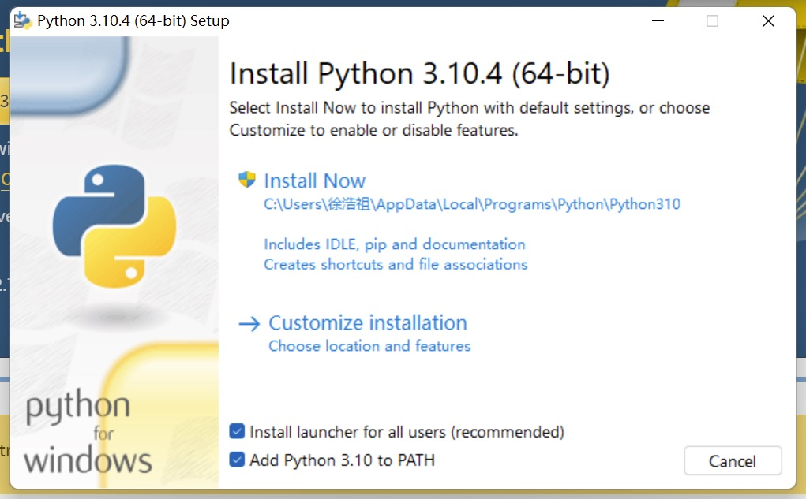
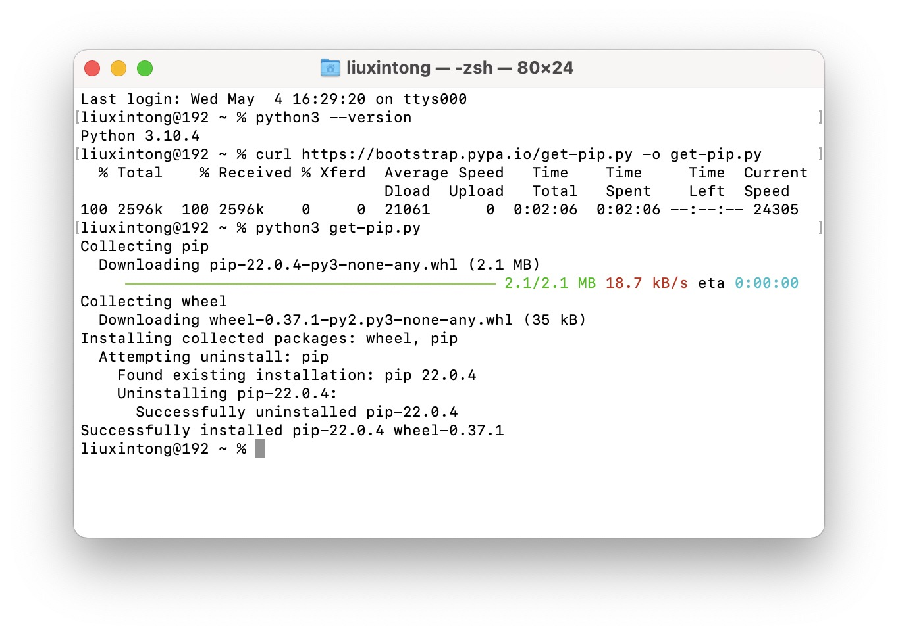
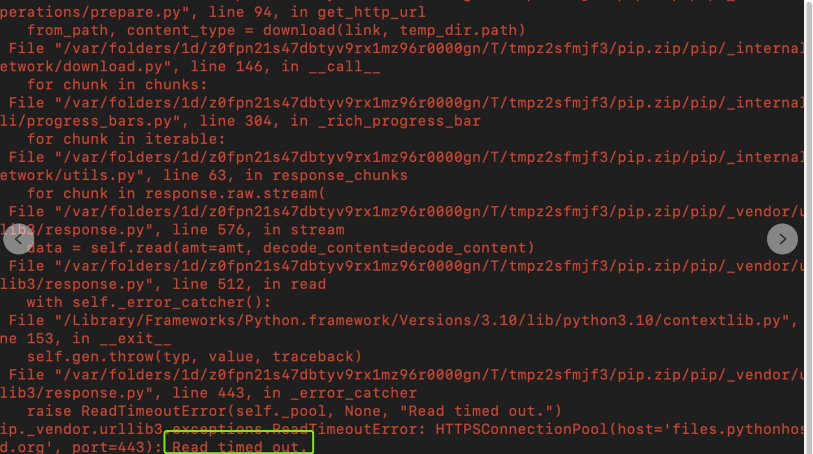
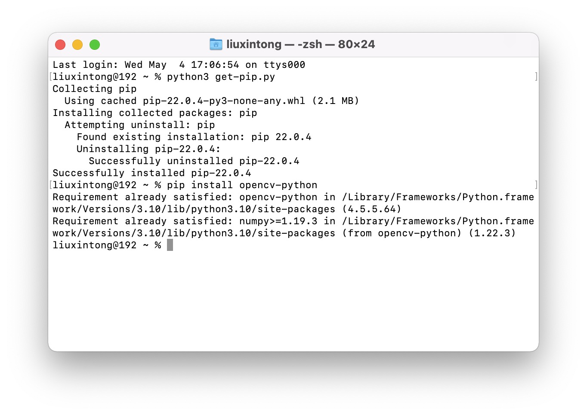
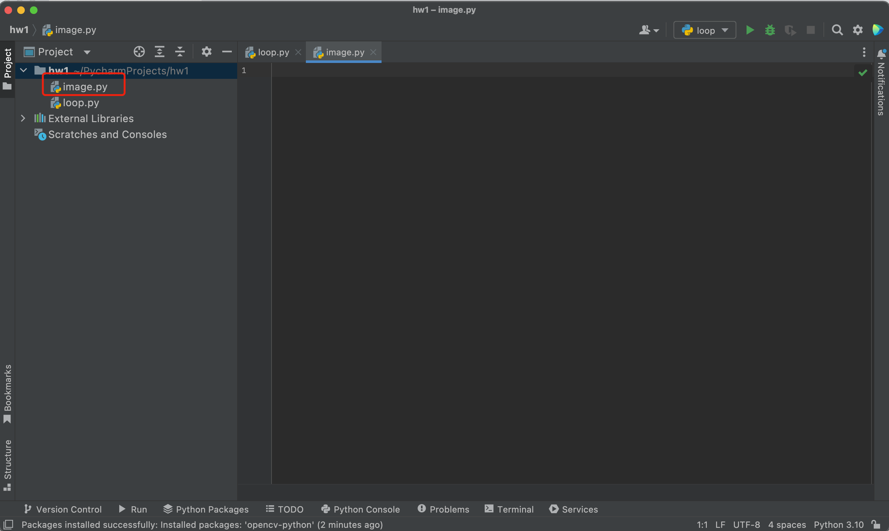
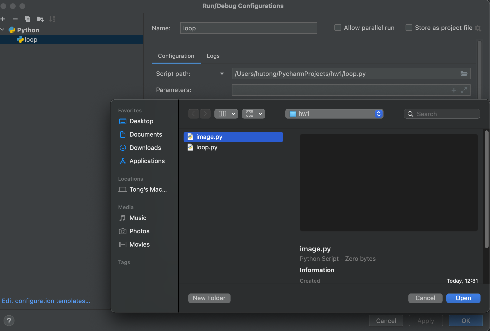
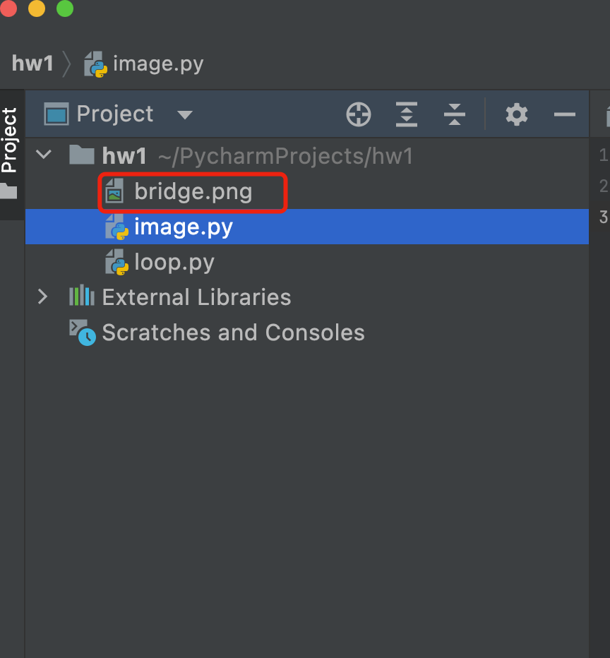

图像滤镜实验
1. 在命令行配置python
还记得在网络原理那堂课上，我们使用命令行终端（Terminal)完成路由器追踪的实验吗？还记得我们使用的命令吗?当时我们使用了traceroute/tracert命令（取决于你使用的操作系统）。这两个命令都是操作系统自带的，现在我们需要在终端上安装python这个命令。这样我们不仅可以在PyCharm上运行Python程序（我们上周已经做到了），我们还可以在终端上执行Python语句。这对于我们接下来要安装的函数库至关重要。
For Mac User: 打开Terminal，输入
python3 --version
按下回车。这个命令可以用来判断Terminal所使用的python版本，也经常用来判断Terminal是否已经安装了python命令。如果你看到的是Python 3.10.4（如下图所示），那么说明你已经安装成功。如果出现的是python command not found，或者其它的版本（如2.x.x)，那么说明你上周的Python没有安装成功，请重新回顾上次作业的步骤。
{kind=link}
For Windows User: 打开cmd，输入
python -V
按下回车。如果显示python版本，说明python命令安装成功。
{kind=link}
如果没有任何结果，说明终端没有安装python命令。你需要重新安装一遍python。注意要将Add Python 3.10 to PATH勾选上（如下图所示）。
{kind=link}
安装完毕之后，在命令行中再次输入python -V，则会出现python的版本。
2. 下载并安装pip命令
下载并安装pip命令。pip是Python的包管理工具，可以通过pip方便的下载并安装Python的函数包。
输入curl https://bootstrap.pypa.io/get-pip.py -o get-pip.py，按下回车并等待下载pip脚本（可能会持续2-10分钟左右）。
输入python3 get-pip.py命令(Windows用户是python get-pip.py)，按下回车并等待安装pip（可能会持续2-10分钟左右）。
安装成功之后你会看到如下界面：
{kind=link}
如果是如下界面，说明未安装成功，原因是python get-pip.py这个命令需要下载一个文件（只有2M)，但由于下载速度过慢导致延时(timeout)。请用下面这个命令：
python3 get-pip.py -i https://pypi.tuna.tsinghua.edu.cn/simple/ --trusted-host pypi.tuna.tsinghua.edu.cn
(Windows的同学将python3换成python即可）
{kind=link}
3. 下载并安装OpenCV函数库
OpenCV是一个跨平台计算机视觉库，可以运行在Linux, Windows和MacOS操作系统上。它实现了图像处理和计算机视觉方面的很多通用算法，例如图像特征提取、人脸识别、手势识别、人机交互等。我们在这次作业中，需要用到OpenCV的部分函数来进行实验。
输入第一个命令：pip install numpy，点击回车。如果也出现time-out的问题，可以输入下面命令：
pip install -i https://pypi.tuna.tsinghua.edu.cn/simple/ numpy
输入第二个命令：pip install opencv-python，点击回车。或者输入下面命令：
pip install -i https://pypi.tuna.tsinghua.edu.cn/simple/ opencv-python
安装成功后，你会看到如下界面：
{kind=link}
4. 新建一个文件
我们已经成功安装好OpenCV函数库，接下来我们要开始完成图像滤镜的实验了。运行PyCharm，打开上周的Project（也可以新建一个Project)，新建一个python文件，取名image.py。
{kind=link}
现在我们的工程中有两个python文件。第一个loop.py是上周我们创建的，image.py是我们刚刚新建的，也是我们这周要提交的文件。所以接下来我们需要让PyCharm知道我们要运行image.py，而不是loop.py。到这一步你其实应该知道怎么做了。
5. 配置运行的python文件
点击右上角edit configuration（现在可能显示的是loop), 在script path中选择image.py，点击open，然后apply。现在我们已经让PyCharm知道，接下来运行的都是image.py这个程序，而不是其它的文件。
{kind=link}
6. 开始编写程序
在image.py中的第一行输入：
import cv2
这一行的作用是导入OpenCV的函数包。如果你发现这一行的下面出现了一根红线，将鼠标移到这一行上，旁边会出现一个”install opencv-python”的提示，点击它，等待它安装好就可以了。安装过程可能会持续1，2分钟的时间。安装完毕之后，红线会自动消失，说明我们已经成功将OpenCV函数包导入进PyCharm了。
到这一步，我们就完成了所有的配置工作。我们接下来就可以开始完成作业了。在打开作业要求之前，我强烈建议大家先回顾一下上节课的步骤，自己按照第7步的步骤操作一遍。
7. 图像处理步骤
首先将要处理的图片放入项目中。这个步骤非常简单，你可以直接将图片文件用鼠标拖到项目中。图片需要和python文件在同一个目录下。
{kind=link}
Note
图片一定要与python文件放在同一个文件下（也就是hw1)，否则会无法加载图片。不要把图片放在一个单独的文件夹中。
接下来就是常见的操作，大家可以按照操作来编写代码，也可以直接打开网站下方的示例代码。示例代码只是一个模版而已，供大家理解使用。
读取、打开、并关闭图像
import cv2
img = cv2.imread('bridge.jpeg') #读取金门大桥的图片，并将图片保存在img这个变量中
cv2.imshow("Demo", img) #显示图片，并将图片暂时命名为Demo
k=cv2.waitKey(0) #等待键盘输入，并将键盘按键信息赋给k
if k==27:
cv2.destroyAllWindows() #如果发现按下的是Esc，则关闭图片并结束程序
读取图像的分辨率、
import cv2
img = cv2.imread('bridge.jpeg') #read the beautiful image of golden gate bridge
img_width= img.shape[1] #image width
img_height= img.shape[0] #image height
print(img_width, img_height) #print image width and height
读取图像某一个像素点的RGB值
blue = img[100, 200, 0] #get the value of blue channel of pixel at row 100, column 200
green = img[100, 200, 1] # get the value of green channel of the same pixel
red = img[100, 200, 2] #get the value of red channel of the same pixel
print(blue, green, red) #print the pixel's RGB value
将某一个像素点改为全白色
img[100, 200] = [255, 255, 255]
将某一个区域的像素点改为全白色
img[100:200, 200:300] = [255, 255, 255]
将某一个像素点的R和B值进行交换
blue = img[100, 200, 0]
green = img[100, 200, 1]
red = img[100, 200, 2]
temp = blue
blue = red
red = temp #交换Red和Blue的值
image[100, 200] = [blue, green, red] #将新的RGB值赋给该像素点
将图片变为灰度图
for row in range(img_height):
for col in range(img_width): #循环遍历图片所有像素点
blue = img[row, col, 0]
green = img[row, col, 1]
red = img[row, col, 2]
color = (blue+green+red)/3 #参考ppt灰度算法
img[row, col] = [r, g, b] #将新的RGB值赋给像素点
保存处理后的图片
cv2.imwrite('1.png', img) #将图片保存为1.png，新的图片会保存在项目下面
8. 作业及资料
作业要求: 图像处理作业
图片：金门大桥
{kind=link}
示例程序：Example Code
PPT: 图像滤镜